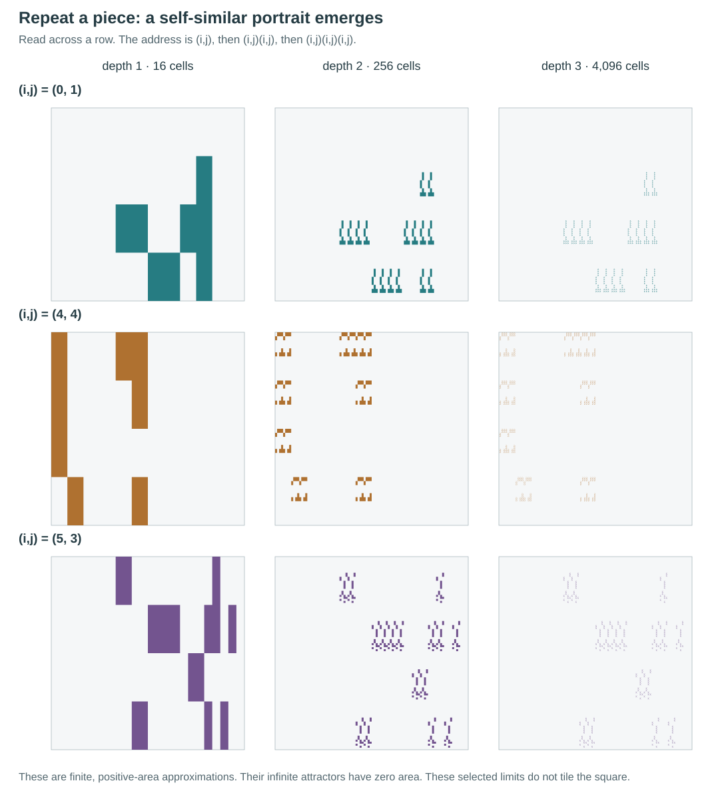
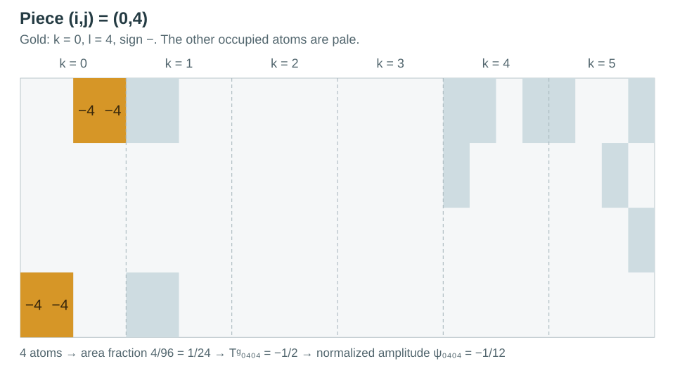
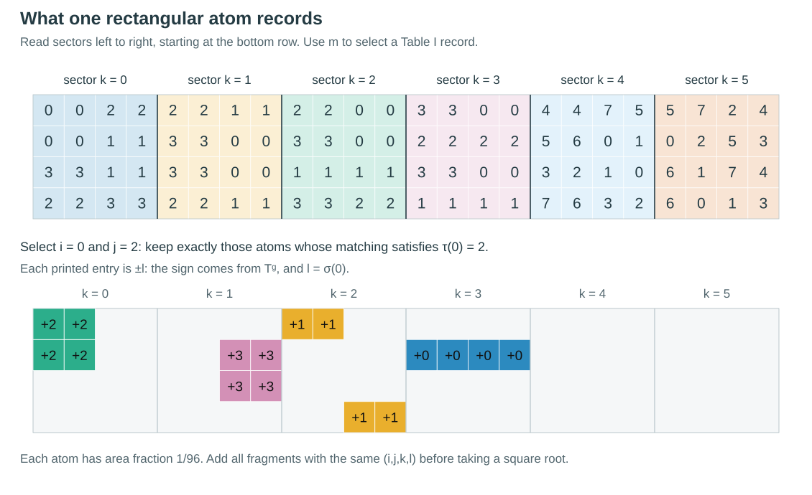
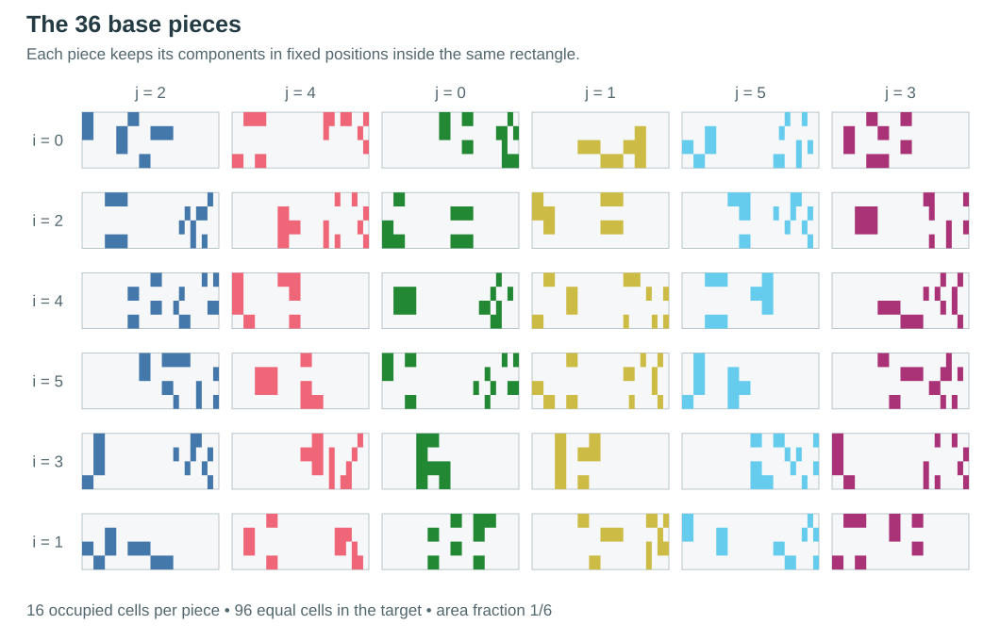
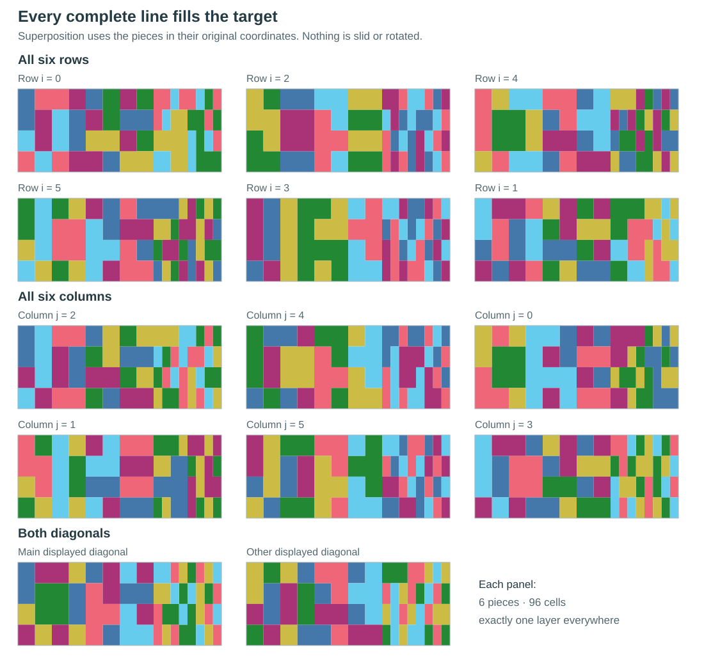
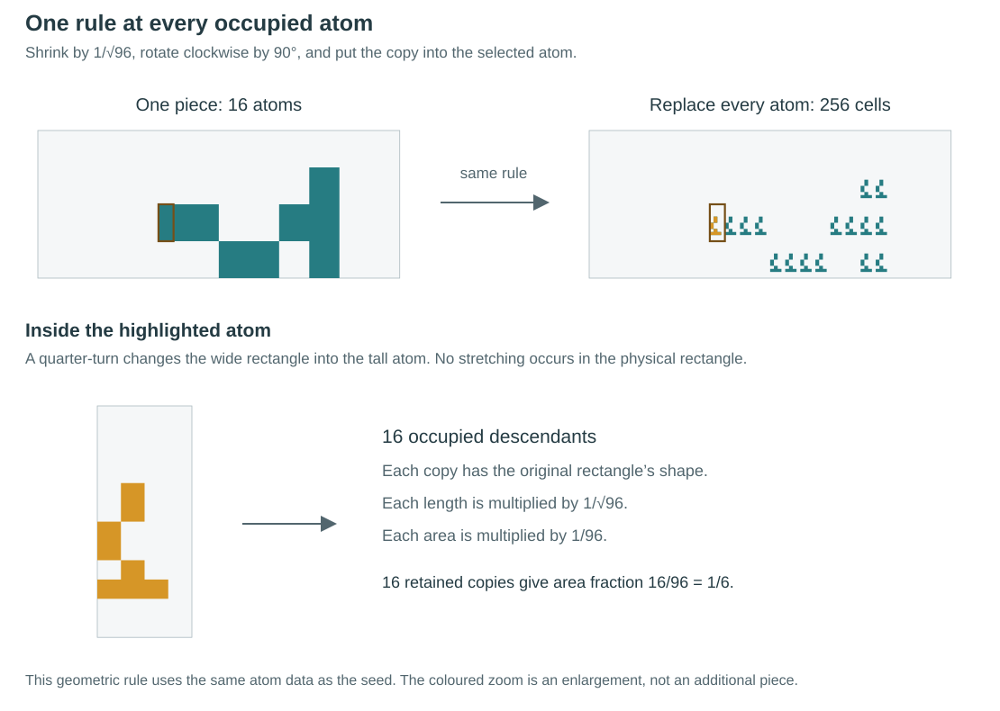
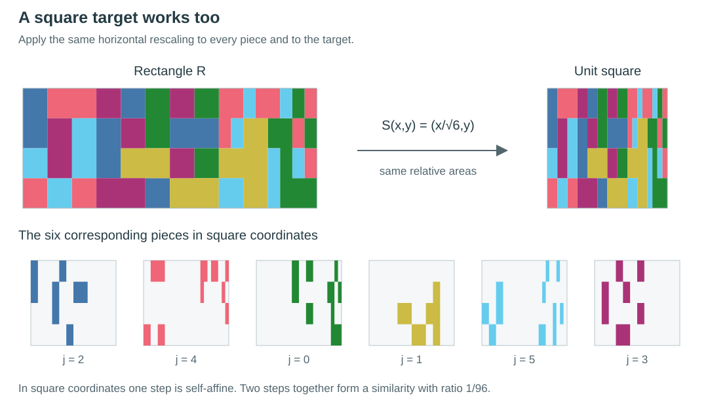
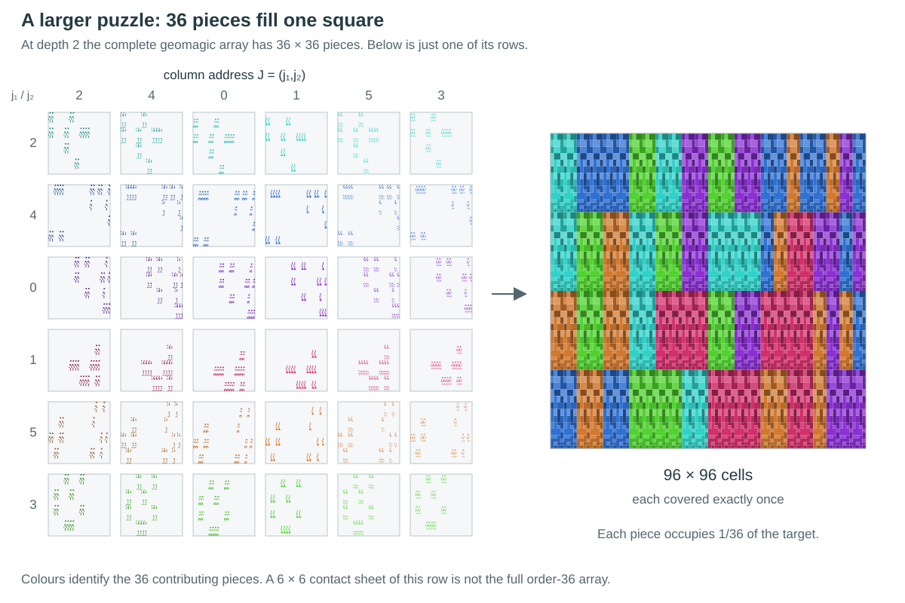
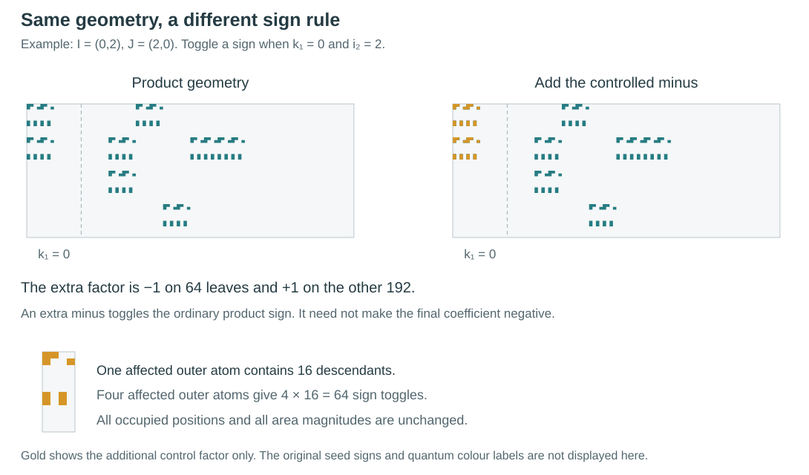

AME state – self-similar geomagic representations
update: 2026-10-10 by W. Bruzda
The material presented on this webpage grew out of my discussions with ChatGPT (GPT-6 Astra Pro) and is a direct follow-up to the geomagic construction presented here. My own contribution was limited to asking questions and guiding the model towards the simplest possible construction. The question was: "can we anyhow relate the construction of AME states with IFS or L-System?" And the answer was surprisingly affirmative. Hence, I do not regard this material as suitable for publication as a conventional research paper.
This note is a way to indulge my childhood obsession with fractals. :)
A small puzzle can contain smaller copies of another puzzle. Repeating this one rule produces increasingly intricate pictures, yet their quantum meaning stays exact: at depth $n$ they describe real absolutely maximally entangled states of four systems, each with $6^n$ levels. Every row, every column and both main diagonals still assemble into the same complete figure. The starting point is the real AME$(4,6)$ state and its geomagic representation. Here the same signed data are placed in rectangles so that the construction can repeat by genuine similarities of the plane.

An AME$(4,d)$ state has four parties, each with $d$ possible basis labels (levels).
Here all coefficients $T$ are real. We write $T^{\rm g}$ for the geometric seed: $|\psi_{\rm g}\rangle=T^{\rm g}/6$.
A geomagic square replaces numbers in a magic square by shapes. Its entries are distinct pieces. Each row, column and main diagonal must assemble into the same target. In this construction the pieces already share a coordinate frame: simply superimpose the occupied regions, keeping every component in its prescribed position. A piece may have several disconnected components. The complete collection at fixed relative positions counts as one piece. The geometry represents squared magnitudes. Labels identify coefficients, signs complete the real quantum state. Thus a successful tiling and an AME state are related but separate mathematical requirements. The tiling does not by itself establish the cancellations needed for orthogonality. There are still only four parties at every level. The $n$ six-level digits belonging to party $A$ are grouped into one $6^n$-level party and likewise for $B$, $C$ and $D$.
hexagons $\longrightarrow$ rectangles
The original hexagon and the new rectangle encode the same $T^{\rm g}$. This is a new placement of the same signed, weighted matching data. It is not an affine transformation of the hexagon. A thin triangular contribution can be subdivided and placed elsewhere, provided its label, its sign and its total relative area are preserved.
For the recursive construction we make all atoms equal. Each of the six sectors contains $16$ atoms, so the complete target has $96$. An atom in the first four sectors of the equal-slice hexagon is split into two and the atoms in sectors $4$ and $5$ already have the required sector weight $1/16$. The resulting atoms are placed on a $24\times4$ grid.


A cell of its $24\times4$ grid has width $\sqrt6/24$ and height $1/4$. Its aspect ratio is $1/\sqrt6$: it is a miniature copy of the whole rectangle turned through a right angle. This is the small geometric fact that makes the self-similarity work. In this rectangular placement $34$ of the $36$ base pieces are disconnected as closed sets. That is compatible with the definition used here, namely disconnected components retain their positions. A picture intended as a physical puzzle could use a transparent carrier for each whole piece.
the strings and permutations – a $96$-atom alphabet
The long strings specify where to put a finite list of atoms. A matching word $\tau=251340$ means $\tau(0)=2$, $\tau(1)=5$, $\tau(2)=1$, $\ldots$. The atom goes into piece $(i,\tau(i))$ for each row $i$. A colour word $\sigma$ supplies $l=\sigma(i)$ in that placement. Both words are permutations of $0,\cdots,5$. One target atom therefore appears in six pieces, once in each row and once in each column. The selected matchings also meet each designated diagonal exactly once. A colour belongs to the placement of an atom: the same target location can have different quantum colours in different pieces.
Equation (B1) in the manuscript gives these six words of matching numbers:
| sector $k$ | B1 word | equal-atom word used here |
|---|---|---|
| 0 | 23310102 | 2233331100110022 |
| 1 | 21303021 | 2211330033002211 |
| 2 | 32113020 | 3322111133002200 |
| 3 | 11302230 | 1111330022223300 |
| 4 | 7632321056014475 | 7632321056014475 |
| 5 | 6013617402535724 | 6013617402535724 |
Read an expanded word from left to right, placing its digits along the bottom row of the corresponding $4\times4$ sector block, then along the next row up. Position $t=0,\ldots,15$ in sector $k$ has coordinates $a=4k+(t\bmod4)$ with $b=\lfloor t/4\rfloor$. For sectors $4$ and $5$, each matching occurs twice. Use its first colour word on its first occurrence, and its second colour word on its second occurrence. For sectors 0–3 there is only one colour word for each matching. The sign is the sign of the corresponding entry of $T^{\rm g}$. It is provided by the seed, not by the matching number.

the complete Table I input: $32$ records, $48$ weighted transversals
The weight applies to each listed colour permutation. In sectors 0–3, one record accounts for four equal atoms. In sectors 4–5, each of its two colour words accounts for one atom. Leading zeroes are significant. These data, together with the B1 order and the seed signs, specify the whole base picture.
| $k$ | matching | $\tau$ | $\sigma_1$ | $\sigma_2$ | weight per $\sigma$ |
|---|---|---|---|---|---|
| 0 | 0 | 251340 | 253104 | – | 1/4 |
| 0 | 1 | 341205 | 243150 | – | 1/4 |
| 0 | 2 | 430215 | 423150 | – | 1/4 |
| 0 | 3 | 520341 | 523104 | – | 1/4 |
| 1 | 0 | 253014 | 350241 | – | 1/4 |
| 1 | 1 | 342051 | 340215 | – | 1/4 |
| 1 | 2 | 432150 | 430215 | – | 1/4 |
| 1 | 3 | 523104 | 530241 | – | 1/4 |
| 2 | 0 | 035142 | 314025 | – | 1/4 |
| 2 | 1 | 124035 | 315042 | – | 1/4 |
| 2 | 2 | 215043 | 134025 | – | 1/4 |
| 2 | 3 | 304125 | 135042 | – | 1/4 |
| 3 | 0 | 031452 | 201534 | – | 1/4 |
| 3 | 1 | 120534 | 201453 | – | 1/4 |
| 3 | 2 | 210453 | 021534 | – | 1/4 |
| 3 | 3 | 301524 | 021453 | – | 1/4 |
| 4 | 0 | 142530 | 415320 | 504321 | 1/16 |
| 4 | 1 | 145203 | 412503 | 502413 | 1/16 |
| 4 | 2 | 152403 | 415302 | 504312 | 1/16 |
| 4 | 3 | 154320 | 402531 | 512430 | 1/16 |
| 4 | 4 | 403512 | 054312 | 145302 | 1/16 |
| 4 | 5 | 405231 | 042531 | 152430 | 1/16 |
| 4 | 6 | 503421 | 054321 | 145320 | 1/16 |
| 4 | 7 | 504312 | 052413 | 142503 | 1/16 |
| 5 | 0 | 042513 | 415302 | 504312 | 1/16 |
| 5 | 1 | 045231 | 412530 | 502431 | 1/16 |
| 5 | 2 | 052431 | 415320 | 504321 | 1/16 |
| 5 | 3 | 054312 | 402513 | 512403 | 1/16 |
| 5 | 4 | 413520 | 054321 | 145320 | 1/16 |
| 5 | 5 | 415203 | 042513 | 152403 | 1/16 |
| 5 | 6 | 513402 | 054312 | 145302 | 1/16 |
| 5 | 7 | 514320 | 052431 | 142530 | 1/16 |
In formulas, the table is a decomposition of squared entries into coloured matchings:
It specifies magnitudes. The exact signs and all $152$ nonzero coefficients can be inspected in the coefficient decoder below.
complete rows, columns and diagonals assemble
The array below uses the same row and column orders as the companion construction: $R_0=(0,2,4,5,3,1)$ and $C_0=(2,4,0,1,5,3)$. The two displayed diagonals consist of $(i,D(i))$ and $(i,D'(i))$, where $D=(2,3,4,5,0,1)$ and $D'=(3,2,5,4,1,0)$.

At depth one, six pieces containing $16$ atoms each cover all $6\cdot 16=96$ atoms, once each. At depth two, $36$ pieces containing $256$ atoms each cover all $36\cdot 256=9216$ cells of a $96\times 96$ grid. The tool counts occupied cells exactly. It does not estimate coverage from the rendered pixels.

one replacement rule in any depth
Choose an outer base piece $(i_1,j_1)$. Inside each of its $16$ occupied cells place a smaller copy of a child piece $(i_2,j_2)$, always with the same clockwise quarter-turn. To go deeper, do the same thing to the child. Nothing needs to be redesigned as the depth increases.

For $R=[0,\sqrt6]\times[0,1]$ and a grid cell $(a,b)$, the placement map is
It is a clockwise quarter-turn, uniform contraction and translation, with contraction ratio $r=1/\sqrt{96}$. The 96 possible images of the whole rectangle tile $R$. If $M_{ij}$ is the set of 16 occupied cells of piece $(i,j)$, the complete recursive definition is
where $I=(i_1,\ldots,i_n)$, $J=(j_1,\ldots,j_n)$ and primes remove the first digit. Every piece has $16^n$ equal atoms and occupies the fraction $(16/96)^n=6^{-n}$ of its target.
every depth is a genuine geomagic square
Away from shared boundaries, a point in the target has one atom address at each level. That address selects a matching $\tau$ at each level. Their digitwise product is a permutation of the $6^n$ row and column words. It hits each row, column and designated product diagonal exactly once. Thus every one of the $2d+2$ required lines tiles the target, with $d=6^n$. For the displayed array use the lexicographic products of $R_0$ and $C_0$.
Each replacement retains $16$ of $96$ equal cells. Therefore all pieces have target-area fraction $1/d$, and a line contains exactly $d$ pieces.
The base masks have $144$ distinct normalized images under the four axis-preserving reflection choices. This finite certificate is obtained by exact comparison. At any depth, horizontal boundary lengths are rational multiples of $\sqrt6$ and vertical boundary lengths are rational. A Euclidean congruence cannot interchange these directions. Rectilinear boundaries then leave only translations and axis-preserving reflections.
After translating a piece to normalize its bounding box, its coarse occupied cells recover its outer mask. Restricting to one occupied open cell, then taking closure, recovers the child up to congruence. The base certificate identifies the first pair of labels. Induction identifies the rest. All $d^2$ pieces are therefore pairwise noncongruent, including under reflection. This is a geometric statement, independent of the signs.
state – picture correspondence
At depth $n$, read the row word $I$, column word $J$, sector word $K=(k_1,\ldots,k_n)$ and quantum-colour word $L=(l_1,\ldots,l_n)$. Each is an $n$-digit base-six word. Keep the complete label at every leaf. A single decorative colour cannot display all these digits at once. Collect all fragments with the same complete label $(I,J,K,L)$. Let their total area, divided by the area of the whole target, be $\mu_{IJKL}$. Read their common sign $\varepsilon_{IJKL}$. Then, for $d=6^n$
The first quantity is the two-unitary matrix entry, and the second is the coefficient of the normalized state. Empty regions give zero. Add fragment areas before taking the square root.
There are $96^n$ equal atoms in the target grid. If the chosen coefficient occupies $m$ of them, then
For example, $(i,j,k,l)=(0,4,0,4)$ has four negative atoms. Thus $\mu=4/96=1/24$, $U=-1/2$, and $\psi=-1/12$.
the reverse direction
For the product family, start from the seed coefficients and the stated matching decomposition. Distribute each squared magnitude among its assigned equal atoms, attach its sign and colour label, and put those atoms at the B1 grid positions. Recursively replace occupied cells according to (2), multiplying the base signs. This gives
With corresponding parties grouped, this is $|\psi_{\rm g}\rangle^{\otimes n}$. Tensor products preserve all three unitary flattenings.
The correspondence is exact once the placement conventions and sign rule are specified. The same matrix can admit many pictures, including the original hexagons and these rectangles. Conversely, an unlabelled silhouette loses the sector, colour and sign information and does not uniquely determine a quantum state. The explorers display complete labels numerically. The portrait figures deliberately show geometry alone.
squares vs. hexagons
Apply the same horizontal rescaling to every piece and its target: $S(x,y)=(x/\sqrt6,y)$. The common target becomes the unit square. Every relative area and every encoded coefficient is unchanged, and every complete line still fills its target. The rectangle is useful because one step is a similarity. In the square picture a single step is affine, but two steps together are again a similarity.

In normalized coordinates $z=(u,v)$, one step is
Two successive steps have the form $z\mapsto(\delta-z)/96$: a half-turn and a uniform contraction by $1/96$. Thus depth two has a $96\times96$ grid of genuinely square cells.

Pairwise noncongruence also holds for this particular square construction. It is checked separately: the base gives $288$ distinct normalized images under the eight square symmetries. All 1'296 two-level pieces give 10'368. Recovering coarse cells in pairs of levels extends that certificate to every depth. A common affine map does not preserve noncongruence in general. The separate argument is needed here.
8. the conditional minus sign
The product family already gives infinitely many dimensions. There is also a simple way to change the states while leaving every occupied atom exactly where it is. When the sector digit at one level is $0$ and the row digit at the next level is $2$, multiply the coefficient by $-1$.
Square brackets denote an indicator: $[\text{statement}]$ is $1$ when the statement is true and $0$ otherwise. An extra minus toggles the old sign. It does not necessarily make the final sign negative.

A concrete coefficient has $I=(0,2)$, $J=(2,0)$, $K=(0,0)$ and $L=(2,3)$. Its $4\cdot8=32$ fragments occupy $32/9'216=1/288$ of the target. The product matrix entry is $1/(2\sqrt2)$, and the controlled entry is $-1/(2\sqrt2)$. The corresponding normalized state coefficient is $-1/(72\sqrt2)$. Its area is unchanged.
the changed state is still AME
The operation is a controlled local sign on the child, selected by one outer party. It fits a useful general rule. Let $A$ be a two-unitary tensor and let every $B^{(x)}$ be two-unitary with the same inner dimension. Then
is two-unitary. In each bipartition the controlling index $k$ lies entirely on one side. After reordering indices, the matrix factors into the appropriate flattening of $A$ tensored with an identity, and a block-diagonal matrix whose blocks are flattenings of $B^{(k)}$. Both factors are unitary. Apply this rule repeatedly, using a local sign flip on the inner level $i=2$ when the outer $k=0$. This proves that every $|\Psi_n\rangle$ is a real AME$(4,6^n)$ state. An arbitrary control depending on two outer parties would need a new proof.
it is not just the same tensor power in another local basis
For every $n\geqslant 2$, an exact invariant separates $|\Psi_n\rangle$ from the specified grouped seed power $|\psi_{\rm g}\rangle^{\otimes n}$, even allowing arbitrary local $U(6^n)$ changes of basis. At depth two the separating values are
This establishes a different local-unitary class from those seed powers. It does not establish that the controlled states are irreducible against every possible factorization into other AME states.